Figure Gallery
Model figures, reproducible from code with fixed seeds
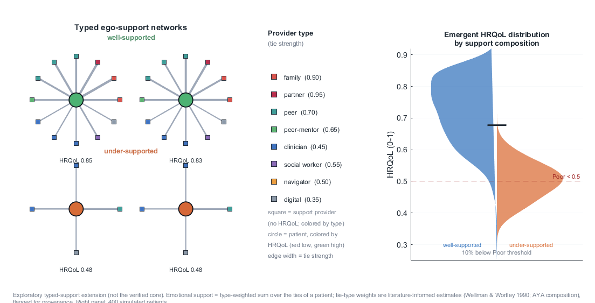
Typed Support Network
Peer, family, and clinical ties in the network layer
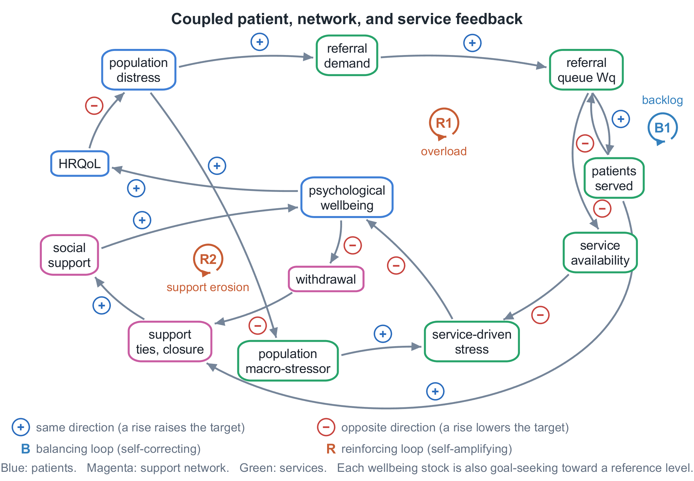
Causal Loop Diagram
Feedback structure across the three layers
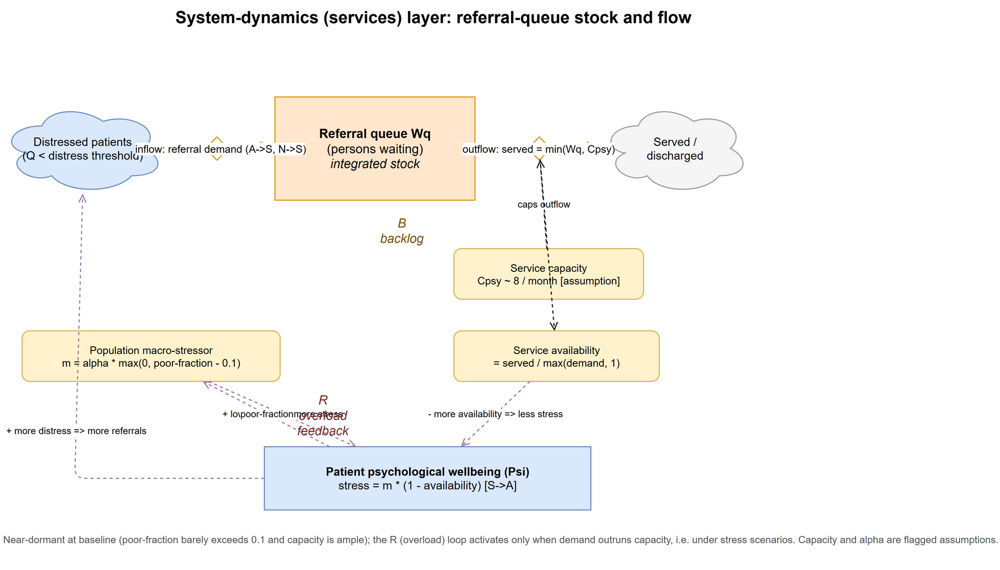
System-Dynamics Stock & Flow
Service layer stocks, flows, and constraints
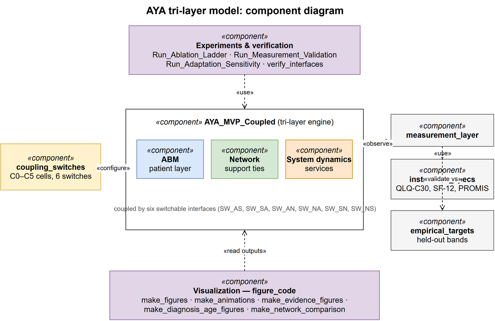
Component Diagram (UML)
The three layers and six coupling interfaces
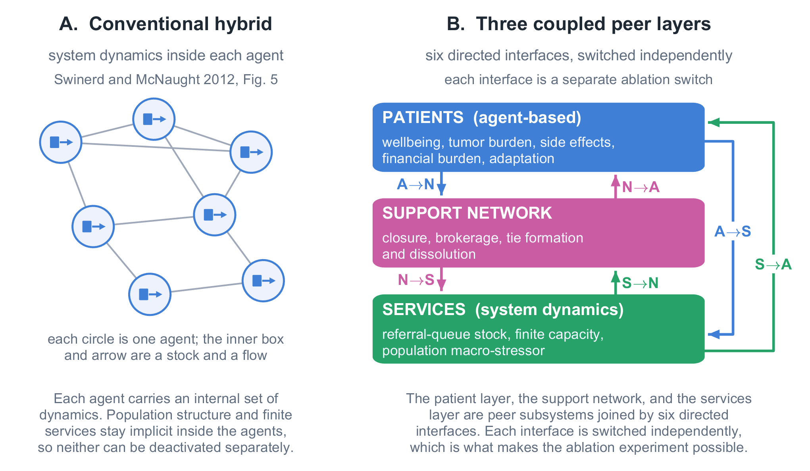
Coupling Taxonomy
Where this peer-layer architecture sits among hybrid designs
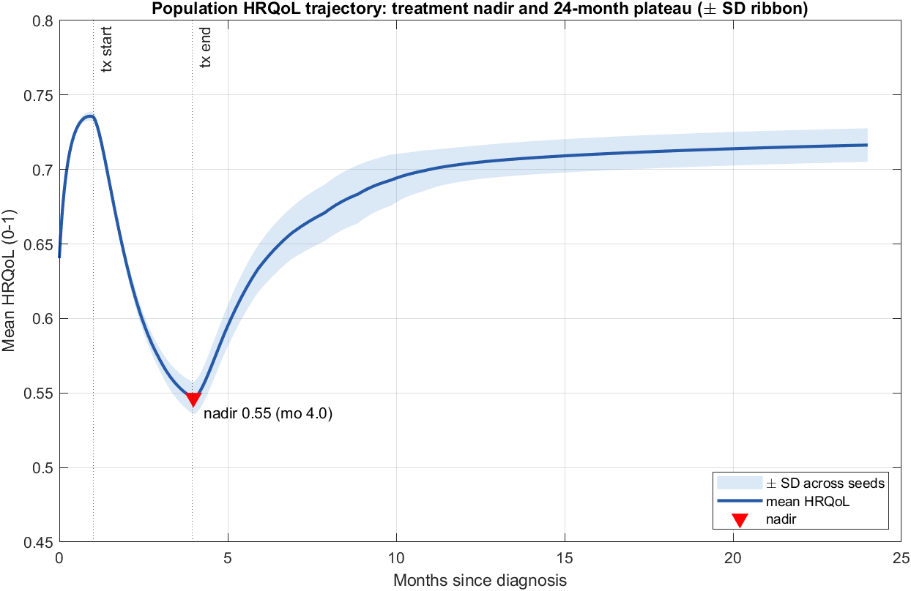
HRQoL Trajectory & Treatment Nadir
Population trajectory from diagnosis through survivorship
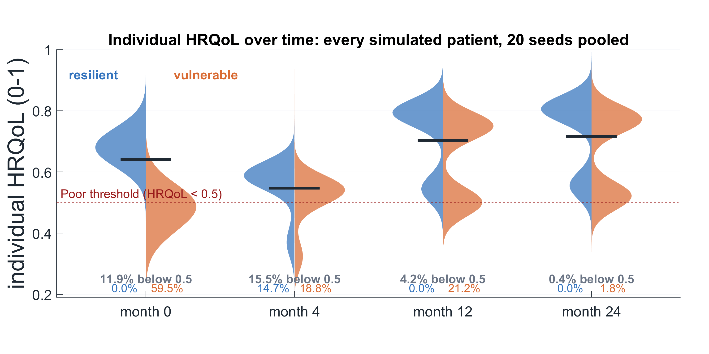
HRQoL Distribution
Between-patient heterogeneity at key time points
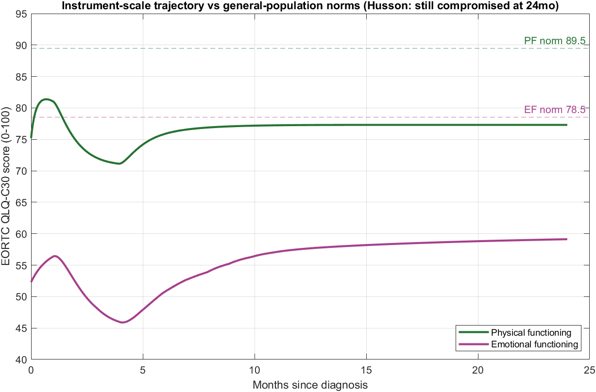
Instrument-Space Trajectory
Model state mapped through the observation layer
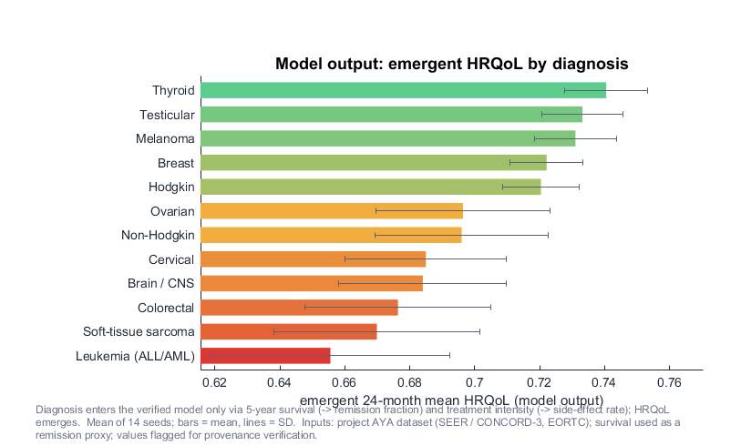
Trajectories by Diagnosis Group
Model output across AYA diagnosis mixes
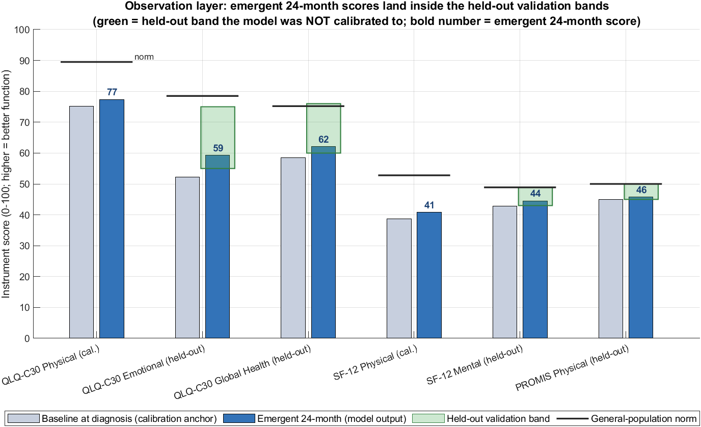
Calibration / Validation Split
Held-out validation against empirical anchors
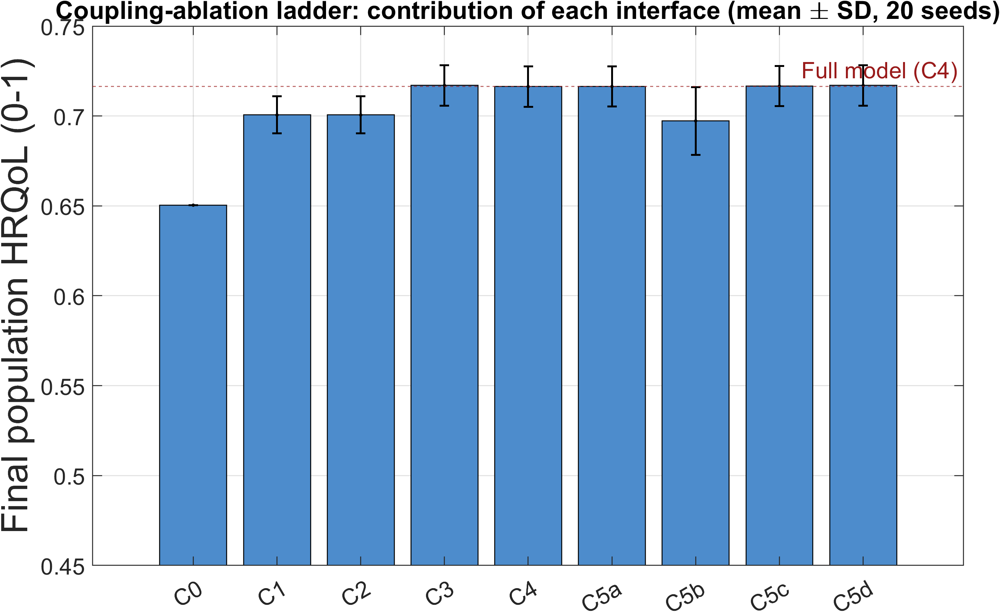
Ablation Ladder
The contribution of each layer, coupling cell by cell
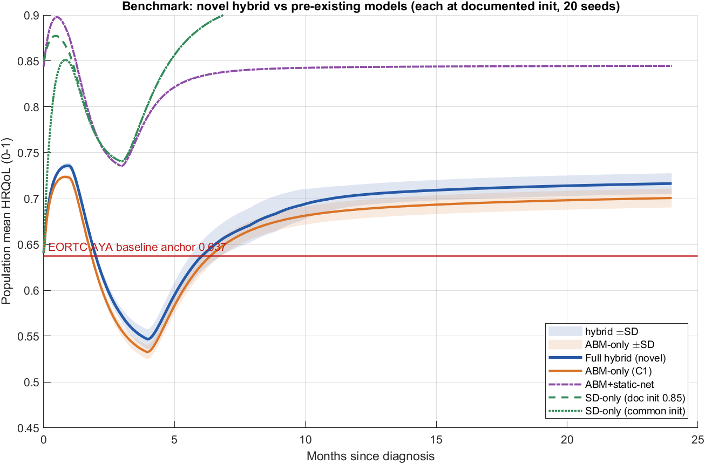
Benchmark: Trajectory Comparison
Hybrid vs SD-only vs Q-PRIMA arms
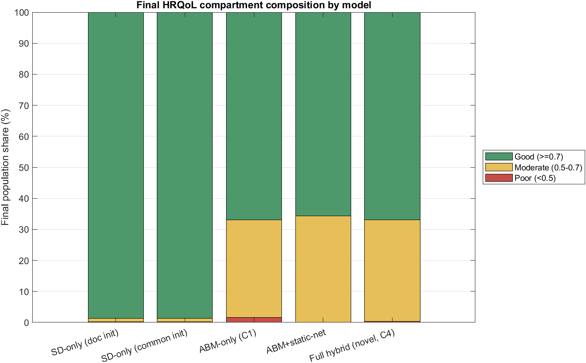
Benchmark: Compartment Comparison
Structural docking across model arms
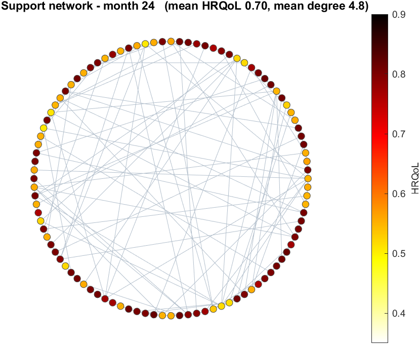
Benchmark: Final Network State
Support network at 24 months (representative run)
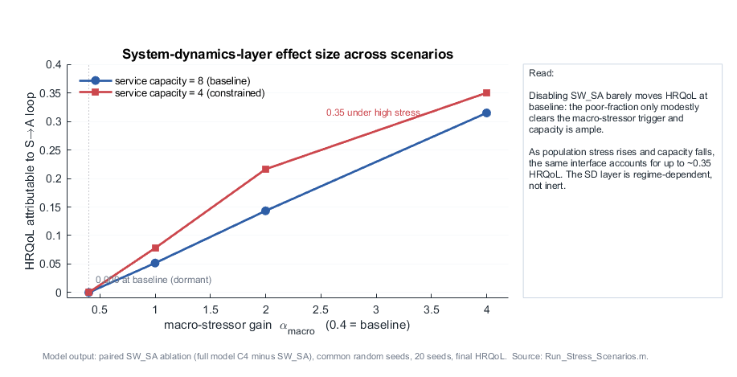
Network Stress Scenarios
Isolation and reduced-tie conditions
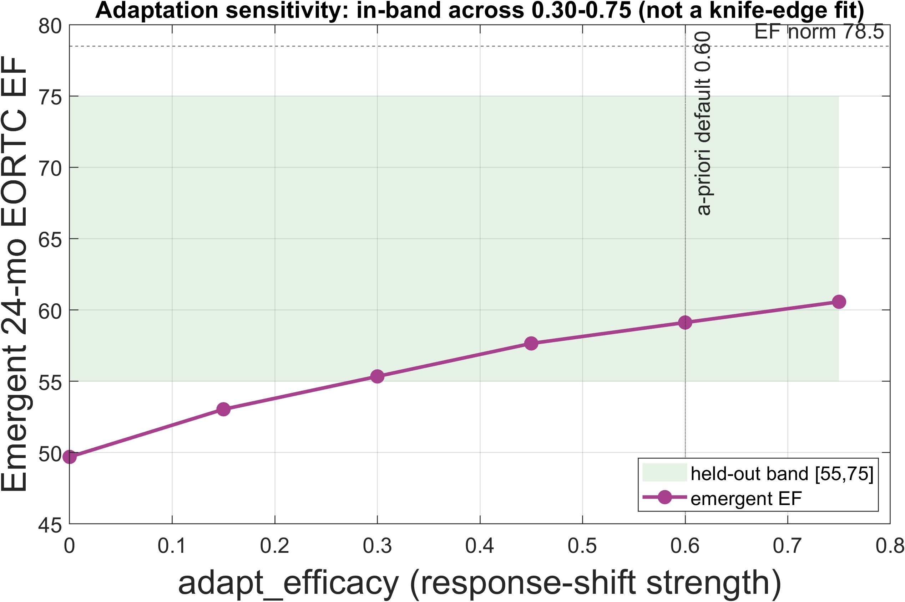
Adaptation Sensitivity
Anti-overfitting sweep over adaptation parameters
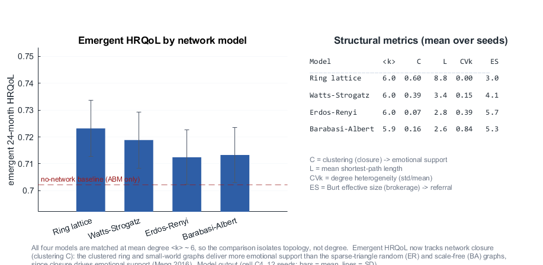
Network Topology Comparison
Ring / Watts-Strogatz / Barabási-Albert / Erdős-Rényi
Reproduce or Download
Every figure is regenerated deterministically from code (fixed seeds) by
make_all_website_assets.m. Animations and the full figure set, with captions
and context, live on the model site.